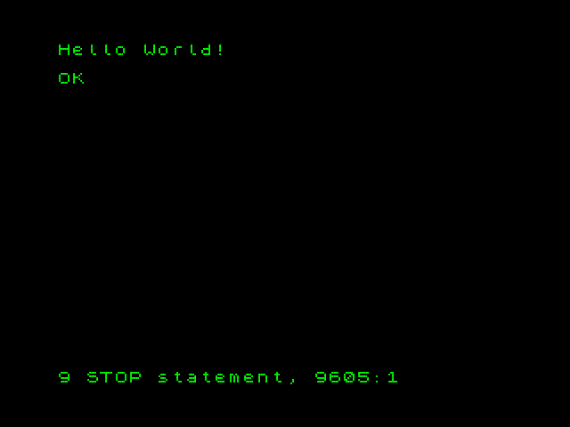

risorse | zx spectrum | brainfxck
Si tratta di un interprete del linguaggio esoterico brainf*ck scritto completamente in Basic.
L'idea di scrivere questo semplice programma è nata durante le vacanze natalizie del 2007 quando ho avuto la possibilità di passare un pomeriggio alla tastiera di uno ZX Spectrum 48K. La peculiarità dell'interprete sta nel fatto che il codice brainf*ck è contenuto all'interno di istruzioni REM che precedono il codice dell'interprete vero e proprio.
Per lanciare l'interprete, una volta immesso il programma brainf*ck, è sufficiente un RUN. L'interprete è corredato dal listato dell'immancabile "Hello world!".
Il programma ha partecipato all'edizione del 2008 del concorso CSSCGC - comp.sys.sinclair Crap Game Competition, classificandosi al 91° posto.

Scarica il nastro virtuale brainfxck.tzx (4KB).
10 REM ++++++++++[>+++++++>++++++++++>+++>+<<<<-]>++.>+.+++++++..+++.>++.<<+++++++++++++++.>.+++.------.--------.>+.>.
9000 REM
9005 REM ENVIRONMENT INITIALIZATION
9010 REM
9015 CLS
9020 PRINT "Please wait..."
9025 LET ORG=40000
9030 LET SIZE=100
9035 FOR I=0 TO SIZE-1
9040 POKE ORG+I,0
9045 NEXT I
9050 LET PTR=ORG
9055 LET MAXDEPTH=5
9060 DIM A(MAXDEPTH)
9065 DIM L(MAXDEPTH)
9070 DIM P(MAXDEPTH)
9075 LET DEPTH=0
9080 LET SKIP=0
9085 CLS
9090 REM
9095 REM SCANNER INITALIZATION
9100 REM
9105 DEF FN P(X)=PEEK (X)+256*PEEK (X+1)
9110 LET VARSADDR=FN P(23627)
9115 LET PROGADDR=FN P(23635)
9120 LET LINEADDR=PROGADDR
9125 REM
9130 REM SCANNING LOOP
9135 REM
9140 LET TEXTLEN=FN P(LINEADDR+2)
9145 LET TEXTADDR=LINEADDR+4
9150 IF PEEK (TEXTADDR)<>234 THEN GO TO 9595
9155 LET TEXTPOS=1
9160 LET C=PEEK (TEXTADDR+TEXTPOS)
9165 IF SKIP>0 THEN GO TO 9440
9170 REM
9175 REM > (MOVE POINTER FORWARD)
9180 REM
9185 IF C<>62 THEN GO TO 9220
9190 IF PTR=ORG+SIZE THEN LET E$="buffer overrun": GO TO 9610
9195 LET PTR=PTR+1
9200 GO TO 9560
9205 REM
9210 REM < (MOVE POINTER BACKWARD)
9215 REM
9220 IF C<>60 THEN GO TO 9255
9225 LET PTR=PTR-1
9230 IF PTR<ORG THEN LET E$="buffer underrun": GO TO 9610
9235 GO TO 9560
9240 REM
9245 REM + (INCREMENT CELL CONTENT)
9250 REM
9255 IF C<>43 THEN GO TO 9295
9260 LET BYTE=PEEK (PTR)+1
9265 IF BYTE>255 THEN LET BYTE=0
9270 POKE PTR,BYTE
9275 GO TO 9560
9280 REM
9285 REM - (DECREMENT CELL CONTENT)
9290 REM
9295 IF C<>45 THEN GO TO 9335
9300 LET BYTE=PEEK (PTR)-1
9305 IF BYTE<0 THEN LET BYTE=255
9310 POKE PTR,BYTE
9315 GO TO 9560
9320 REM
9325 REM . (OUTPUT CELL CONTENT)
9330 REM
9335 IF C<>46 THEN GO TO 9380
9340 LET O=PEEK PTR
9345 IF O=10 THEN PRINT CHR$ (13);: GO TO 9360
9350 IF O<32 OR O>127 THEN GO TO 9360
9355 PRINT CHR$ (O);
9360 GO TO 9560
9365 REM
9370 REM , (GRAB USER INPUT)
9375 REM
9380 IF C<>44 THEN GO TO 9440
9385 PRINT FLASH 1;" ";
9390 LET I$=INKEY$
9395 IF I$="" THEN GO TO 9390
9400 PRINT CHR$ (8);" ";CHR$ (8);
9405 POKE PTR,CODE (I$)
9410 IF PEEK (PTR)=13 THEN POKE PTR,10
9415 IF PEEK (PTR)=7 THEN POKE PTR,0
9420 GO TO 9560
9425 REM
9430 REM [ (LOOP START)
9435 REM
9440 IF C<>91 THEN GO TO 9500
9445 IF SKIP>0 THEN LET SKIP=SKIP+1: GO TO 9560
9450 IF PEEK (PTR)=0 THEN LET SKIP=1: GO TO 9560
9455 IF DEPTH=MAXDEPTH THEN LET E$="stack overflow": GO TO 9610
9460 LET DEPTH=DEPTH+1
9465 LET A(DEPTH)=LINEADDR
9470 LET L(DEPTH)=TEXTLEN
9475 LET P(DEPTH)=TEXTPOS
9480 GO TO 9560
9485 REM
9490 REM ] (LOOP END)
9495 REM
9500 IF C<>93 THEN GO TO 9560
9505 IF SKIP>0 THEN LET SKIP=SKIP-1: GO TO 9560
9510 IF DEPTH<1 THEN LET E$="stack underflow": GO TO 9610
9515 LET DEPTH=DEPTH-1
9520 IF PEEK (PTR)=0 THEN GO TO 9560
9525 LET LINEADDR=A(DEPTH+1)
9530 LET TEXTLEN=L(DEPTH+1)
9535 LET TEXTPOS=P(DEPTH+1)
9540 GO TO 9565
9545 REM
9550 REM NEXT INSTRUCTION
9555 REM
9560 LET TEXTPOS=TEXTPOS+1
9565 IF TEXTPOS<=TEXTLEN THEN GO TO 9160
9570 LET LINEADDR=LINEADDR+4+TEXTLEN
9575 IF (LINEADDR<VARSADDR) THEN GO TO 9125
9580 REM
9585 REM PROGRAM ERROR
9590 REM
9595 PRINT
9600 PRINT "OK"
9605 STOP
9610 PRINT
9615 PRINT "ERROR: ";E$;"."
9620 STOP
9625 REM
9630 REM PROGRAM STARTUP
9635 REM
9640 BORDER 0
9645 PAPER 0
9650 INK 4
9655 BRIGHT 1
9660 POKE 23624,68
9665 CLS
9670 PRINT "brainf*ck interpreter v. 1.01"
9675 PRINT AT 3,0;"source code is expected in REM statements at the beginning of this program."
9680 PRINT AT 7,0;"parsing stops at the first line containing a non REM statement."
9685 PRINT AT 10,0;"RUN starts the interpreter."
9690 PRINT AT 19,0;"copyright {(C)} 2008 g. zuliani"
9695 PRINT AT 21,0;"this is free software"
9700 PAUSE 0: CLS
Pagina modificata l'8/11/2011